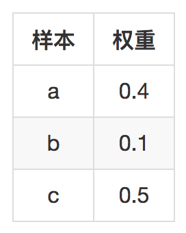
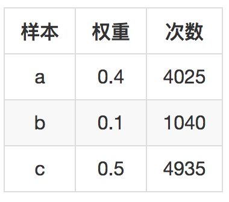
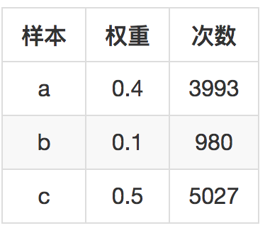

- 00 开篇词 用知识去对抗技术不平等.md
- 01 你真的需要个性化推荐系统吗_.md
- 02 个性化推荐系统有哪些绕不开的经典问题？.md
- 03 这些你必须应该具备的思维模式.md
- 04 画鬼容易画人难：用户画像的“能”和“不能”.md
- 05 从文本到用户画像有多远.md
- 06 超越标签的内容推荐系统.md
- 07 人以群分，你是什么人就看到什么世界.md
- 08 解密“看了又看”和“买了又买”.md
- 09 协同过滤中的相似度计算方法有哪些.md
- 10 那些在Netflix Prize中大放异彩的推荐算法.md
- 11 Facebook是怎么为十亿人互相推荐好友的.md
- 12 如果关注排序效果，那么这个模型可以帮到你.md
- 13 经典模型融合办法：线性模型和树模型的组合拳.md
- 14 一网打尽协同过滤、矩阵分解和线性模型.md
- 15 深度和宽度兼具的融合模型 Wide and Deep.md
- 16 简单却有效的Bandit算法.md
- 17 结合上下文信息的Bandit算法.md
- 18 如何将Bandit算法与协同过滤结合使用.md
- 19 深度学习在推荐系统中的应用有哪些_.md
- 20 用RNN构建个性化音乐播单.md
- 21 构建一个科学的排行榜体系.md
- 22 实用的加权采样算法.md
- 23 推荐候选池的去重策略.md
- 24 典型的信息流架构是什么样的.md
- 25 Netflix个性化推荐架构.md
- 26 总览推荐架构和搜索、广告的关系.md
- 27 巧妇难为无米之炊：数据采集关键要素.md
- 28 让你的推荐系统反应更快：实时推荐.md
- 29 让数据驱动落地，你需要一个实验平台.md
- 30 推荐系统服务化、存储选型及API设计.md
- 31 推荐系统的测试方法及常用指标介绍.md
- 32 道高一尺魔高一丈：推荐系统的攻防.md
- 33 和推荐系统有关的开源工具及框架介绍.md
- 34 推荐系统在互联网产品商业链条中的地位.md
- 35 说说信息流的前世今生.md
- 36 组建推荐团队及工程师的学习路径.md
- 加餐 推荐系统的参考阅读.md
- 结束语 遇“荐”之后，江湖再见.md
22 实用的加权采样算法
今天来讲一个非常轻松的话题，这个话题看似和推荐系统没什么关系，但肯定有用，只是在别的推荐系统相关话题里都没人会提。
一些场景
还记得前面讲到的用户画像吗？想象一个场景：你经过辛辛苦苦抓数据，清洗数据，收集用户行为，目的就是给用户计算兴趣标签。
这时候你可能会遇到一个两难的问题：如果给用户计算出兴趣标签的权重了，那应该保留多少标签呢？
保留太多的话，每次召回候选集时，计算复杂度可不低，只保留少部分吧，那真是手心手背都是肉，生怕丢弃的标签才是用户的真爱。
怎么办？这时候，你需要的一个简单的加权采样算法，每次召回时并不使用全部用户标签，而是按照权重采样一部分标签来使用，这样做的好处当然很明显：
- 大大减少召回时的计算复杂度；
- 可以保留更多的用户标签；
- 每次召回计算时还能有所变化；
- 虽然有变化，但是依然受标签的权重相对大小约束。
加权采样的应用不只这一个地方，比如在热门排行榜展示时，也可以用加权采样，而不仅仅按照排行榜分数顺序展示，采用加权采样的展示方法，会让排行榜每次刷新都略有变化，人民群众也会更加喜闻乐见。
下面介绍几种常用的加权采样算法及其原理，供你日常随手拿来使用。
加权采样
加权采样有两种情况，一种是能够已知全部样本的个数。这需要遍历整个样本，比如说用户标签采样输出，那么每次采样时仍然需要遍历所有的标签，来依次决定每一个标签输出的概率。
另一种是不知道总量样本是多大，或者总量很大，以至于你不愿意全部遍历之后再输出采样结果，这样的数据就是数据流，对应的就是流采样。
下面分别讲这两种采样方法。
1.有限数据集
等概率采样的方法非常简单，任意编程语言中都有伪随机数实现，就不在本文讨论范围内了。
现在假设你有用户标签若干，每一个标签都有个权重w，权重高低反映了用户对这个标签的感兴趣程度高低。你希望每次输出一部分标签用于召回推荐候选集，每次输出时都不一样，但是又能反映用户标签的权重，输出的概率和权重成正比。
这时候你需要一个公式：
\[S_{i} = R^{\\frac{1}{w_{i}}}\]
解释一下这个公式：
- wi 是每个样本的权重，比如用户标签权重；
- R是遍历每个样本时产生的0到1之间的随机数；
- Si就是每个样本的采样分数
遍历之后，按照采样分数排序，输出前k个结果就是你得到的采样结果。可以编程简单做个模拟，比如下面有这样几个简单样本。

模拟10000次后，三个样本被采样次数如下：

你可以看到，每个样本采样概率和它的权重成正比。
还有另一种加权采样方法，是利用指数分布。
我先给忘记了指数分布的人复习一下什么是指数分布。
假设你到银行去办业务，每个人办理业务的时间是不确定的，那每个人办理业务时间的概率分布就是指数分布，用教科书上的话说，就是两个事件发生的时间间隔。
指数分布的概率密度函数是：
指数分布的参数Lambda，它的倒数，\(\\frac{1}{\\lambda}\) 就是事件发生时间间隔的期望。把指数分布的这个意义放进标签中来考虑，标签的权重其实反映一个直觉：权重越大的标签，用户消费它就越频繁，也就是间隔时间就会短。
所以根据这个原理，就有另一个加权采样的办法：为每一个标签构造一个指数分布随机数，这个指数分布的参数Lambda就是标签权重，然后用这个指数分布的产生一个随机数，再输出随机数最大的k个标签作为采样结果,是不是很完美？
还是上面的权重，再来模拟10000次。-

依然完美符合权重的相对大小。
2.无限数据集
上面的两种采样都是针对有限数据集的，也就是采样之前都要遍历一遍所有样本。那么如果面对的数据集无限大，或者不知道多大时，该怎么做加权采样呢？这就要讲到另一个采样算法了，名字叫蓄水池采样（也叫蓄水池抽样）。
蓄水池采样可以用在推荐系统的哪些地方呢？比如可以再模型融合之后加一层蓄水池抽样，或者在召回阶段加一层蓄水池采样，这样在不影响整个推荐流程和转化概率的前提下，降低计算复杂度和提升推荐多样性。
或者，在线阶段要使用用户的反馈行为做实时推荐，对于不同的用户，活跃程度不同，产生的反馈行为数量不同，你也可以用蓄水池采样，为每个用户取出固定数量的行为用于更新推荐结果。
下面，我先讲蓄水池采样，再讲加权蓄水池采样。
假如有一个数据集合，一共有n条，要从中采样取出k个，那么每个样本被选中的概率就是 \(\\frac{k}{n}\) 。蓄水池采样的做法是：
- 直接先取出前k个样本留着，这k个就是随时准备最终要输出的；
- 从第k+1个开始，每个都以 \(\\frac{k}{n}\) 的概率去替换那留着的k个样本中的一个。
这个过程，随时可以取用那个k个集合作为输出结果，任意时刻，当总样本遍历了n个时，他们的概率都是 \(\\frac{k}{n}\) 。这就是蓄水池采样，蓄水池采样，顾名思义，k个元素的样本集合就是个蓄水池，是任意时刻的采样结果，可以随时取用。
现在回到我们今天的主题来，实际上更需要的是加权蓄水池采样。加权蓄水池采样利用的依然是在前面说的第一种加权采样方法，只不过结合了蓄水池采样的思想。
要从大数据集中采样k个，其具体做法是这样的：
- 为每一个样本生成一个分数，分数还是用这个公式 \(S_{i} = R^{\\frac{1}{w_{i}}}\);
- 如果结果不足k个，直接保存到结果中；
- 如果结果中已经有k个了，如果 \(S_{i}\) 比已有的结果里最小那个分数大，就替换它。
总结
今天介绍的算法非常简单，但是在推荐系统中有很多的用途。尤其是面对的数据需要采样、需要有所变化时，加权采样本质上来说就是让权重影响采样概率。
前面的几种加权采样算法，都是让采样概率和权重成正比，这意味着你的样本权重之间的关系要合理。
那么，请思考另一个问题，如果你的样本权重有正有负，该如何加权采样呢？欢迎留言一起讨论。
感谢你的收听，我们下次再见。

© 2019 - 2023 Liangliang Lee. Powered by gin and hexo-theme-book.